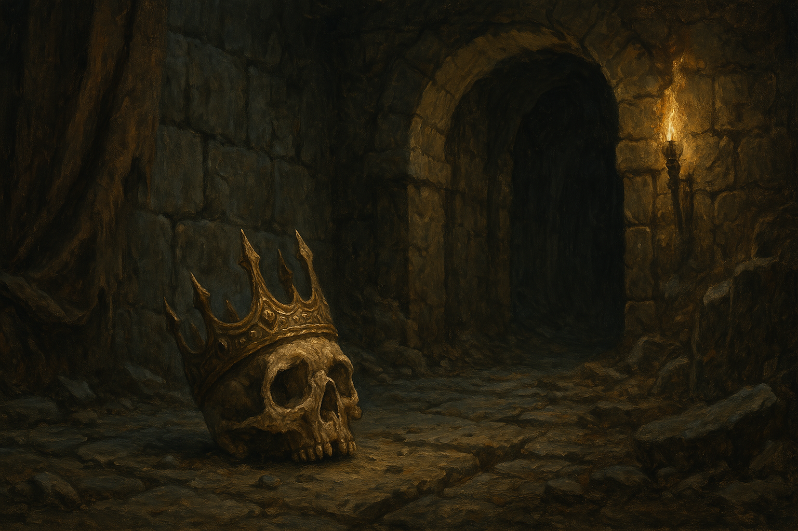

Chapter 1: Aberration 101
The Cave of Drogsland


The Cave of Drogsland
15051.05.09
在異變的母親大人消滅羅特和芒果蛛以外的其他夥伴後，羅特渡過了十分煎熬的兩年。在這兩年間，他也逐漸從自我墮落中慢慢恢復，為了生存，接了獨立傭兵的工作。
而在一次機會下，羅特與瑪莉安・詹斯再次相會，瑪莉安不忍心看見羅特這樣受苦。在瑪莉安的鼓勵下，羅特開始接受多人傭兵團隊，也開始與社會慢慢接壤。
在這期間，羅特開始認識了幾名較有默契的傭兵夥伴，包含半獸人賽柏、牛頭人庫登，以及流漿怪烏波-薩斯拉，並長期合作一起接任務。
這一次，冒險者們從一名神秘的委託人，接到了一個案子，賞金十分豐厚。委託人僅向羅特透露，請團隊到麥丁頓王國邊陲的卓茲蘭（或是俗稱鬧鬼荒野），裡面的卓茲克別莊（卓茲克別莊）底下的洞窟，去拿一個王冠回來。
原本型態為鳥頭蜘蛛身體的芒果蛛，也在羅特的心境轉化下，改變型態為一條橘黃色的蛇，更名為芒果，收在羅特腰後的小包內。
冒險者們來到了卓茲蘭唯一的酒館，寂靜酒館（寂）。但與店名不同，裡面的氣氛十分活絡。老闆雅各熱情的招呼冒險者們，並介紹了他的新婚妻子，伊娃。雅各表示為了慶祝他們的新婚，這週酒館內的啤酒全部店家請客。
冒險者們點完餐後，羅特向團隊簡單說明了這次任務的目標，並與雅各詢問「卓茲克別莊」的位置。雅各簡單說明，路途並不複雜，從酒館走出後右轉，看到一間巫醫的診所後右轉，再走五分鐘左右就會到了。羅特同時拿出了任務的目標：那張素描的王冠圖像，給其他冒險者們看。
聽見討論的內容，鄰桌一名獨行的帽兜客，GoR，豎起了耳朵。對他而言，卓茲克別莊的洞穴是他再熟悉不過的地方，畢竟近幾天，他每天都去那裡探險，與孽物打交道。因此對於這群新來的冒險者們，他格外放了點注意力。
吃飽後，冒險者們租了三樓的八人通鋪，簡單盥洗後便睡了。住在二樓的GoR讓身上其中一隻小孽物爬到通鋪的窗外監視冒險者們，卻沒有得到多少新的資訊；另外兩隻小孽物，則利用晚上時間先去了洞穴，嘗試捕捉更多孽物回來。
夜晚，冒險者們熟睡，但GoR做了一個夢。在夢中，他看見一頂做工精細的王冠，被緩緩帶上一顆頭顱，然後便是一聲尖叫嘩破他的夢境。
15051.05.10
一早，冒險者們來到酒館一樓用餐，繼續討論著關於任務的事。坐在後頭的GoR思索著如何加入話題，幾度造成了一點小尷尬。但最後在雅各的協調下，GoR答應擔任冒險者們的嚮導，帶他們去卓茲克別莊的洞穴內探險。
GoR嘗試讓他身上的孽物和冒險者們交流，但對孽物有極大排斥的羅特對此非常反感，只能基於合作的關係，勉強接受。
冒險者與GoR出發，走到了巫醫的診所。在GoR的推薦下，冒險者們進到了診所內，決定採買一點補給品。巫醫烏鴉醫生似乎是個德魯伊隱士，牆上用德魯伊語寫著各種零碎的隻字片語，就連懂德魯伊語的烏波也無法讀懂意思。在烏鴉醫生的說明下，他表示這裡的人記憶都怪怪的，似乎在幾年前，曾經發生了一場怪物的襲擊，而他嘗試在自己想起來的時候，趕緊把關鍵字記下來，但還是無法完整拼湊在一起。同時，他也記得自己好像曾經養過一隻狗，但究竟是哪種品種，他也不記得了。
羅特最終買了五罐藥水後，冒險者們和GoR就出發前往卓茲克別莊了。
來到別莊，冒險者們和GoR推開了門。左右兩側的花園，有著被砍斷的雕像，除了上面有卓茲克的字樣外，完全無法辨認。冒險者們和GoR決定再往內走，此時，庫登突然聽見腦內傳來一個年輕男子的聲音。聲音自稱是米可・卓茲克爵士，卓茲克家族的最後一名成員。經過與米可的對談，庫登得知當時卓茲克家是在睡夢中被滅門的，因此也不知道殺死他們的是誰。
GoR和冒險者們說明，別莊內有八間房，但往地下的洞口會隨機出現在不同房間，因此冒險者們分別進入不同房間探索。最終，烏波發現了洞口，冒險者們便依序進入洞內（用跳的、用繩索攀爬、用法術緩緩降落，各種不同方式）。
GoR對這個洞穴已經有挺完整的瞭解，也畫了一張地圖。他把地圖拿出來分享給冒險者們看，並簡單說明他註記的圖例。冒險者們決定往其中一個方向走，然後看見了四隻盤旋在空間內的怪物。GoR提醒他們，只要小心不要撞到他們，就沒事，結果好死不死，冒險者們與GoR五人，其中四人直接硬生生撞上了怪物。
在一場原本可避免的戰鬥中，冒險者們還算能應付敵人，但GoR明顯打得很吃力。在冒險者們的協助下，怪物終於被消滅了。
15051.05.09
After the mutated The Mother eliminated all other partners except Lott and Mango Spider, Lott spent two very painful years. During the past two years, he gradually recovered from his self-degradation. In order to survive, he took over the job of an independent mercenary.
And by chance, Lott and Marianne Jens met again. Marianne couldn't bear to see Lott suffer like this. With Marianne's encouragement, Lott began to accept a multi-person mercenary team and slowly began to connect with society.
During this period, Lott began to get acquainted with several mercenary partners who had a tacit understanding, including the orc Psyber, the tauren Kudan, and the ooze monster Ubbo-Sathla, and they cooperated with each other for a long time to take on tasks.
This time, the adventurers received a case from a mysterious client with a very generous reward. The client only revealed to Lott that the team should go to the cave under Drogskol Manor in Drogsland (or commonly known as Moorland Haunt) on the edge of the Mattington kingdom to get a crown back.
The Mango spider, which originally had the body of a bird-headed spider, also changed its form into an orange snake under the transformation of Lott's state of mind. It was renamed Mango and stored in the small bag on the back of Lott's waist.
The adventurers came to the only tavern in Drogsland, Silence. But unlike the name of the store, the atmosphere inside is very lively. The boss Jacob warmly greeted the adventurers and introduced his new wife, Eva. Jacob said that in order to celebrate their wedding, all the beer in the pub will be treated to beer this week.
After the adventurers finished ordering their meals, Lott briefly explained the goal of the mission to the team, and asked Jacob about the location of "Drozik Villa". Jacob A brief explanation, the road is not complicated. Turn right after walking out of the tavern. When you see a witch doctor's clinic, turn right. Walk for about five minutes and you will be there. Lott also took out the goal of the mission: the sketched crown image, and showed it to the other adventurers.
Hearing the content of the discussion, a lone hooded man at the next table, GoR, pricked up his ears. For him, the cave of Drozke Villa is a place he is very familiar with. After all, in the past few days, he has been exploring there every day and dealing with evil creatures. Therefore, he paid extra attention to this group of new adventurers.
After eating, the adventurers rented an eight-person bunk on the third floor, washed themselves briefly and went to sleep. GoR, who lived on the second floor, let one of the little monsters climb out of the window of the bunkhouse to monitor the adventurers, but did not get much new information. The other two little monsters used the night time to go to the cave first, trying to capture more monsters and come back.
At night, the adventurers were asleep, but GoR had a dream. In his dream, he saw a finely crafted crown being slowly carried over a head, and then a scream broke through his dream.
15051.05.10
Early in the morning, the adventurers came to the first floor of the tavern to have dinner and continued to discuss the mission. GoR, who was sitting in the back, was thinking about how to join the topic, which caused a little embarrassment several times. But in the end, under the coordination of Jacob, GoR agreed to serve as the adventurers' guide and take them to explore the caves of Drozkebiezhuang.
GoR tried to let the evil things in him communicate with the adventurers, but Lott, who had a strong rejection of evil things, was very disgusted with this and could only reluctantly accept it based on a cooperative relationship.
The adventurer and GoR set off and walked to the witch doctor's clinic. Following the recommendation of GoR, the adventurers entered the clinic and decided to buy some supplies. The witch doctor Dr. Crow seems to be a hermit. Various fragmentary phrases are written on the wall in Drew Yi. Even Ubbo, who understands Drew Yi, cannot understand the meaning. Under Dr. Crow's explanation, he said that people here have strange memories. It seems that there was a monster attack a few years ago, and he tried to quickly write down the keywords when he remembered it, but he still couldn't piece it together completely. At the same time, he also remembered that he once had a dog, but he couldn't remember what kind it was.
Lott After finally buying five jars of potions, the adventurers and GoR set off for Drozke Villa.
Arriving at the villa, the adventurers and GoR opened the door. The gardens to the left and right contain severed statues, completely unrecognizable except for the word Drogskol on them. The adventurers and GoR decided to go further inside. At this time, Kudan suddenly heard the voice of a young man in his head. The voice claims to be Sir Mikkel Drogskol, the last member of the Drogskol family. After talking to Mikkel, Kudan learned that the Drogskol family was killed in their sleep, so they did not know who killed them.
GoR explained to the adventurers that there are eight rooms in the villa, but the underground holes will randomly appear in different rooms, so the adventurers enter different rooms to explore. Finally, Ubbo discovered the entrance to the cave, and the adventurers entered the cave in order (by jumping, climbing with ropes, and using spells to slowly descend, in various ways).
GoR already has a complete understanding of this cave and has also drawn a map. He took out the map and shared it with the adventurers, and briefly explained the legend he had noted. The adventurers decided to go in one direction and saw four monsters hovering in the space. GoR reminded them that as long as they were careful not to hit them, they would be fine. As a result, the adventurers and GoR were five people, and four of them hit the monster directly.
In an otherwise avoidable battle, the adventurers were able to cope with the enemy, but GoR was obviously having a hard time fighting. With the help of the adventurers, the monster was finally eliminated.